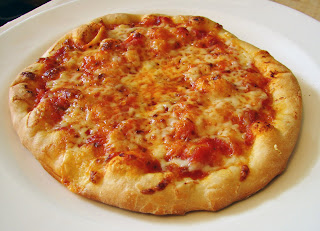

Wolfgang Puck's Pizza Dough

Description
This is my go to dough recipe. It's well worth the time it takes. I've got
a friend who consistently requests it when they come to visit. Great dough takes
a classic dish like pizza and makes it something memorable.
Ingredients
- 2 1/4 tsp (1 Packet) dry active yeast
- 1 tsp honey
- 1 cup warm water (105 degrees F)
- 3 cups all-purpose flour
- 1 tsp kosher salt
- 1 tbsp extra-virgin olive oil
Steps
- In a small bowl, dissolve the yeast and honey in 1/4 cup of the warm water.
- Combine the flour and the salt in a food processor fitted with a steel blade. Alternatively, combine in a standing mixer fitted with a dough hook.
- Add the oil, yeast mixture, and the remaining 3/4 cup of water and mix until the dough comes cleanly away from the sides and forms a ball.
- Turn the dough out onto a clean work surface and knead by hand for 2 or 3 minutes. The dough should be smooth and firm.
- Cover the dough with a clean, damp towel and let it rise in a warm spot for about 30 minutes. When ready, the dough will stretch as it is lightly pulled.
- Work each ball by pulling down the sides and tucking under the bottom of the ball. Repeat 4 or 5 times.
- On a smooth, unfloured surface, roll the ball under the palm of your hand until the top of the dough is smooth and firm, about 1 minute. Cover the dough with a damp towel and let it rest for 15 to 20 minutes. Repeat with the remaining balls. At this point, the dough balls can be wrapped in plastic and refrigerated for up to 2 days.
- To prepare each pizza, dip the ball of dough into flour and shake off the excess. Place the dough on a clean, lightly floured surface and start to stretch the dough. Press down on the center, spreading the dough into an 8-inch circle with an outer border a little thicker than the middle.
- Arrange toppings of your choice over the oil. Using a lightly floured baker’s peel or a rimless flat baking tray, slide the pizza onto the hot baking stone and bake until the pizza crust is nicely browned, 10 to 12 minutes.
- Transfer the pizza to a firm surface and cut it into slices with a pizza cutter or very sharp knife. Repeat with the remaining pizza dough. Serve immediately.